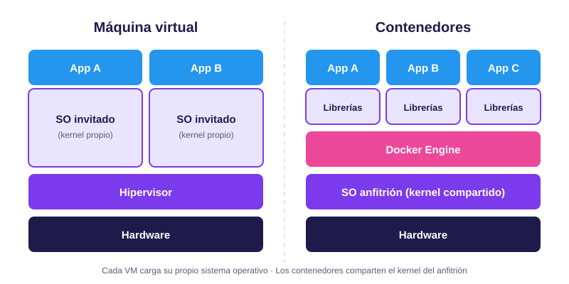

Módulo 01
Fundamentos
El problema que resuelve Docker, de dónde viene y en qué se diferencia de una máquina virtual.
El problema: "en mi máquina funciona"
Una aplicación no depende solo de su código. También necesita un sistema operativo, versiones concretas de lenguajes y librerías, variables de entorno y servicios como bases de datos. Si el equipo de desarrollo, el de pruebas y el servidor de producción difieren en cualquiera de esos puntos, la aplicación puede fallar en un entorno y funcionar en otro.
Docker resuelve esto empaquetando la aplicación junto con todo lo que necesita para ejecutarse en una unidad llamada contenedor. Ese paquete se comporta igual en el portátil del desarrollador, en un servidor local o en la nube.
Historia
Docker no inventó el aislamiento de procesos. Lo que hizo fue volverlo fácil de usar. Estos son los hitos principales:
-
1979
chroot
Unix V7 introduce la llamada que cambia el directorio raíz de un proceso, el primer paso hacia el aislamiento del sistema de archivos.
-
2000
FreeBSD Jails
Amplían la idea para aislar también procesos y red.
-
2004
Solaris Zones
Sun Microsystems ofrece contenedores a nivel de sistema operativo.
-
2008
LXC
Linux Containers combina las funciones del kernel de Linux (namespaces y cgroups) en una herramienta utilizable.
-
2013
Docker
La empresa dotCloud, con Solomon Hykes, presenta Docker en la conferencia PyCon. Su aporte principal fue una forma sencilla de construir, distribuir y ejecutar contenedores.
-
2014
Kubernetes
Google publica este orquestador, pensado para gestionar contenedores en grandes clústeres.
-
2015
OCI
Nace la Open Container Initiative, bajo la Linux Foundation, para estandarizar el formato de imágenes y el tiempo de ejecución de contenedores.
Contenedores vs. máquinas virtuales
Ambas tecnologías aíslan aplicaciones, pero lo hacen en capas distintas. Una máquina virtual emula hardware completo y ejecuta un sistema operativo propio sobre un hipervisor. Un contenedor se ejecuta directamente sobre el kernel del anfitrión.

| Característica | Máquina virtual | Contenedor |
|---|---|---|
| Kernel | Propio, dentro de cada sistema invitado | Compartido con el anfitrión |
| Tamaño típico | Gigabytes | Megabytes |
| Tiempo de arranque | Minutos o decenas de segundos | Segundos o menos |
| Consumo de recursos | Mayor, por el sistema operativo completo | Menor, solo la aplicación y sus dependencias |
| Aislamiento | Más fuerte, a nivel de hardware virtualizado | Más ligero, a nivel de proceso |
| Caso ideal | Ejecutar sistemas operativos distintos o cargas que requieren aislamiento máximo | Microservicios, entornos reproducibles e integración continua |
No son tecnologías rivales: en la práctica se combinan. Es habitual que los contenedores se ejecuten dentro de máquinas virtuales en la nube.
Glosario
- Imagen
- Plantilla de solo lectura, formada por capas, que contiene la aplicación y sus dependencias.
- Contenedor
- Instancia en ejecución de una imagen.
- Dockerfile
- Archivo de texto con las instrucciones para construir una imagen.
- Registro
- Servicio donde se almacenan y comparten imágenes. Docker Hub es el más conocido.
- Daemon (dockerd)
- Servicio en segundo plano que gestiona imágenes, contenedores, redes y volúmenes.
- Namespace
- Función del kernel de Linux que da a cada proceso su propia vista de recursos (procesos, red, sistema de archivos).
- cgroup
- Función del kernel de Linux que limita y mide los recursos (CPU, memoria) de un grupo de procesos.
- Volumen
- Almacenamiento gestionado por Docker que persiste aunque el contenedor se elimine.
- OCI
- Open Container Initiative: estándares abiertos para imágenes y runtimes de contenedores.